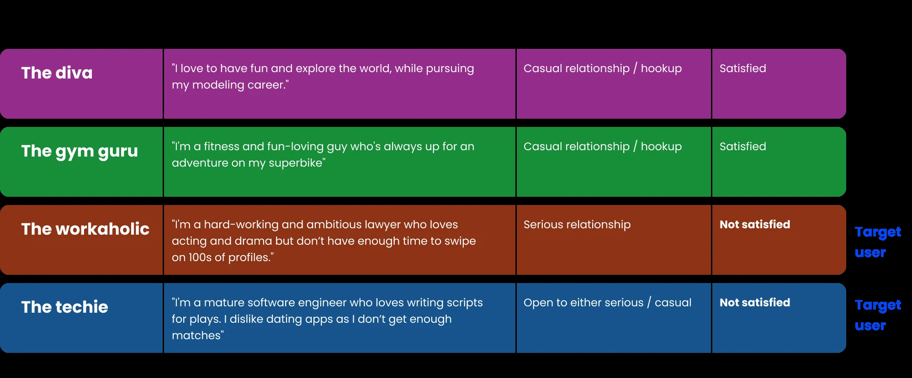
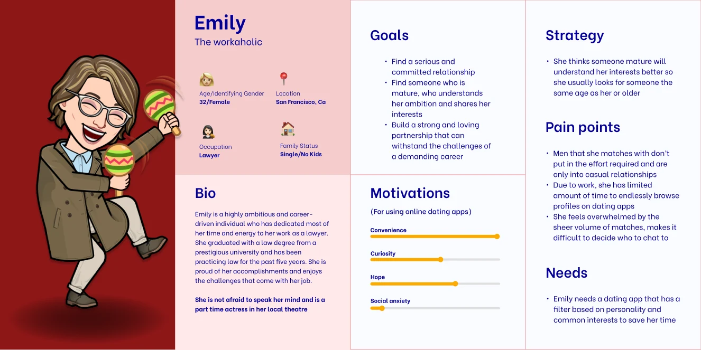
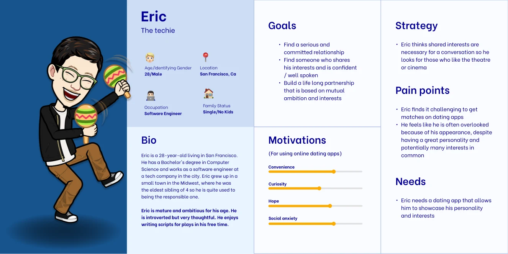
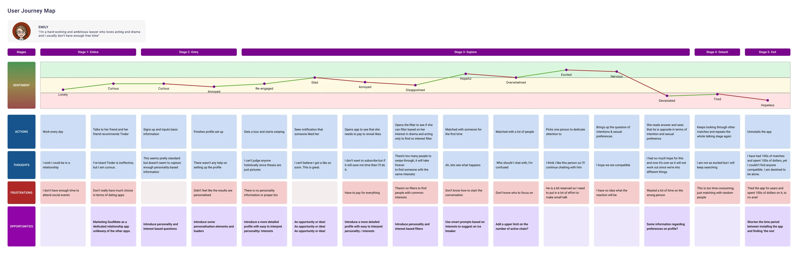
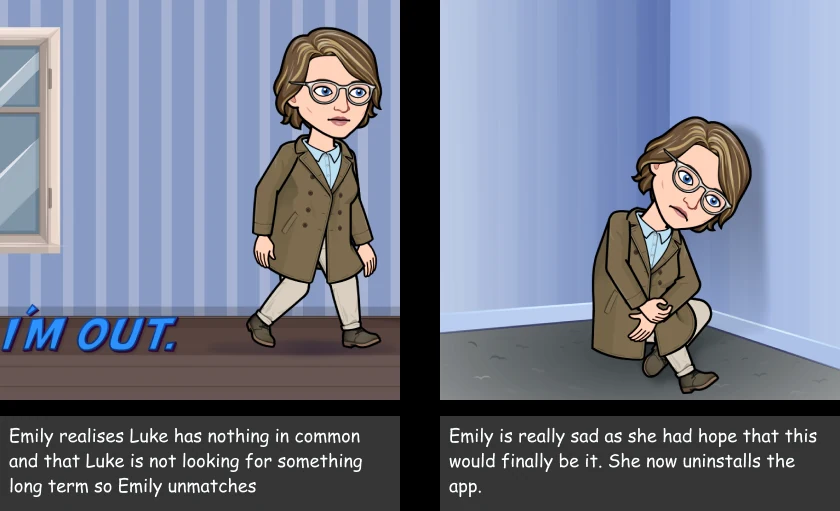
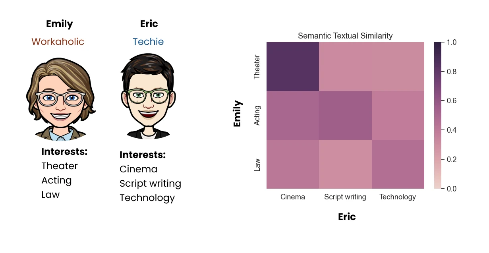
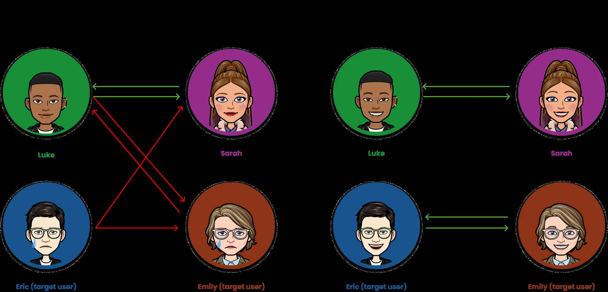
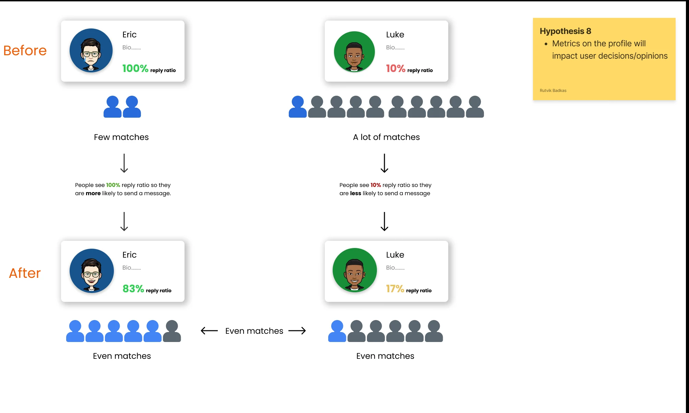

SoulMate · Self-initiated research & concept
Dating apps don't have a match problem. They have a choice problem.
Most people on dating apps want a relationship, and most of them aren't finding one. Over three months, I researched why, combining a survey, fieldwork on the apps and a literature review. The research led to a concept that matches people on personality and rewards effort over volume.
- My role
- UX designer: research, analysis, synthesis, concept
- Team
- 2 UX designers (with Rutvik Badkas)
- Timeline
- 3 months · Feb–Apr 2023
- Methods
- Survey · ethnography · literature · competitors
From the survey: 59.8% of respondents chat with about 1 in 10 of their matches, and 84.8% meet about 1 in 10 of the people they chat with.
survey respondents across 13 countries
were not satisfied with the dating apps they use
would take a 15-minute personality quiz to get better matches
would pay for an app like this, compared with 28% for the apps they use now
The problem
People go to dating apps to find a partner. The apps are designed to keep them swiping.
Online dating is now the most common way couples in the US meet: a 2019 Stanford study found nearly 40% of couples first met online. Yet the leading apps match people mostly on photos, age and distance. Many people end up with plenty of matches and no real connection, and some start to feel like products on a shelf.
We started with a broad question: why is it so hard to find a compatible partner on apps built to do exactly that? We didn't want to start from a feature idea. We wanted to find the real problem first and let the research shape the product.
Who we designed for
People who want a meaningful relationship and are open to finding it through an app. Many have tried the current apps and felt let down, and they would put in more effort if it led to better matches.
How I researched it
No single method explains dating behaviour, because what people say, what they do and why they do it often don't line up. I used four methods, each covering a gap the others left, and we logged our hypotheses as we went so each one could be tested against evidence.
Survey
107 respondents in 13 countries, mostly aged 18–34, to validate the problem and measure how people behave on the apps.
Ethnography
A month on four dating apps ourselves, plus in-depth conversations with 10 people aged 25–35.
Literature review
Research on choice overload, partner selection and self-esteem, used to explain what we saw.
Competitor analysis
Tinder, Bumble, Badoo and Hinge, the four apps our respondents used most, compared on how they match and filter.
What people told us
The survey showed a clear gap. People want relationships, they rarely get past the match, and they're unhappy enough to try something new, even if it asks more of them.
Why are you on dating apps?
% of 107 respondents
Matches per day, by gender
self-reported mean · men n=45, women n=55
The difference was statistically significant. The non-binary group (n=4) was too small to analyse.
How ready are people for something new?
% of respondents answering yes
Would you pay for it?
% willing to pay for a subscription
1. Matches rarely turn into anything
69.1% of respondents were on the apps to date or find a partner, yet most got fewer matches than they expected, and only about 1 in 100 matches became a meeting.
2. The experience is lopsided
Women reported more than twice as many matches a day as men. Both groups were still dissatisfied, which was an early sign that more matches wouldn't fix the problem.
3. People aren't swiping mindlessly
The most common answer (43.9%) was that people look at photos and read the bio before swiping. They want more to go on than the apps give them.
4. They'll put in effort for better matches
Nearly 9 in 10 would spend 15 minutes on a personality quiz, and more would pay for an app like ours than for the apps they use now.
Hypotheses tested by the survey
People will answer 10–15 minutes of psychometric questions to get deeper matching.
People will try a new app, even in a crowded market.
Most people's main reason for using dating apps is to find a relationship.
What people actually do
"What people say, what people do, and what people say they do are entirely different things."Margaret Mead, anthropologist
Surveys capture what people say. People also act differently when they know they're being studied, which is known as the Hawthorne effect. So instead of running formal interviews, we used four dating apps ourselves for a month, swiping through 100 profiles a day, and talked with 10 people aged 25–35 as fellow users. We told each of them what we were doing after about an hour of conversation.
| One month | Matches | Chats | Dates |
|---|---|---|---|
| Me | 35 | 15 | 1 |
| Teammate | 97 | 32 | 1 |
Nearly three times the matches, and the same single date.
What we saw
- Most matches weren't compatible for a long-term relationship.
- Profiles didn't give enough to judge someone's personality or interests.
- People misrepresented themselves. Very few people in Tinder's gamers group actually played games, and many people's stated intentions didn't match what they wanted.
- People with lots of matches treated chatting as a chore.
- Endless swiping made people rule others out over hair or clothes, in a way they never would in person.
- Participants with long relationships said apps work against compromise, and described them as
shopping
and a place wherethe grass is greener
. - Some worried that personality matching would filter them out. We kept that concern in mind when designing filters.
- Despite poor odds, most stayed hopeful and were willing to put in more effort.
Why it happens
We knew what people said and what they did. The research literature explained why.
Swipe data showed the same imbalance we found in the survey. Men match with about 1.8% of the people they like. Women match with 36%, but because they like only 5% of profiles, that works out to 1.8% of all their swipes, about the same as men. On average, it takes about 57 matches to get one meet-up.
Yet women looking for relationships are as dissatisfied as men, despite getting far more matches. The number of matches isn't the problem.
How often a like becomes a match
median user · Swipestats data
How much people filter out
share of potential matches removed by filters
Mostly on surface traits like height and age.
Too much choice
In Iyengar and Lepper's well-known jam study, shoppers who were offered fewer options were happier with what they picked. Dating apps show the same effect. When the pool feels endless, every person feels replaceable. People spend less time on each profile, keep looking for someone "better" and ghost more easily, which is exactly what we saw in the field.
The wrong way of comparing
Finkel and colleagues describe how online daters compare many profiles side by side on traits like looks and height. Offline, people judge one person at a time, which is closer to how relationships actually work. Apps encourage people to choose on what they think they want rather than what actually matters to them.
A cost to self-esteem
Research links the sense of endless options to lower self-esteem and more fear of being single. Getting few matches or constantly comparing yourself to others makes it worse, and the people who most want a relationship feel it the most.
A gap no app covers
One comment in our fieldwork led us to look at sexual compatibility. Research shows it matters to relationship satisfaction, and many people are uncomfortable raising it with a stranger. None of the four apps used it in matching.
The insight
Dating apps optimise for more matches. People need fewer, better ones, and enough information to believe each one is worth their time.
Where the market falls short
Each of the four apps our respondents used most solves part of the problem, but none matches people on who they are.
| App | What it does well | Where it falls short |
|---|---|---|
| Tinder | The largest user base. Interest tags and interest-based groups. | Interests aren't verified or used in matching. Whistleblowers report a hidden score that shows people with fewer matches less often. About 13% of users find a long-term relationship. |
| Bumble | Women message first. A 24-hour reply window pushes people to act. A better gender ratio. | More filters for paying users, but none based on personality or interests. |
| Badoo | The widest set of filters, including interests. | Interests only match exactly, so "movies" won't match "films". Personality is a single choice between introvert and extrovert. |
| Hinge | Built for relationships. People like a specific prompt and can add a note, and "We Met" feedback improves matching. | No interests in profiles. Sorting by compatibility is only for paying users. 80% of users haven't found a long-term relationship. |
Defining the problem
I brought the research together into a revised problem statement with five parts. Each part is specific enough to design against.
Superficial matching
Matching and filters run on looks, age and location, so compatibility is low.
Thin profiles
Profiles don't show personality, and misrepresenting yourself is easy.
Choice overload
Endless options lead to constant comparison and a hunt for someone "better".
Lopsided matching
A few people get flooded with matches while many get almost none, and both sides lose out.
Opaque algorithms
Nobody knows how matches are made, so people distrust the results.
Who we designed for
We sketched four archetypes of dating-app users and wrote a storyboard showing how the current apps fail each of them. Two archetypes became our target users, and we turned them into detailed personas, checking them with additional semi-structured interviews.
Emily, the workaholic, is an ambitious lawyer who loves theatre and has little free time to sift through profiles. Eric, the techie, is a thoughtful software engineer who writes scripts in his spare time and is often overlooked because of how he looks.

Four archetypes. The workaholic and the techie are the least satisfied, so they became our target users.

Emily needs to filter on personality and shared interests to save time.

Eric needs a way to show his personality and interests beyond his photos.

Emily's journey on Tinder. Her mood peaks when she finds someone she likes and bottoms out when she learns they want different things. Each low point is a design opportunity. Click to enlarge.

The storyboard's ending
In our storyboard, Emily spends her limited time on Luke, who has plenty of matches and isn't looking for anything serious. Eric shares her interests but can't get a match, and his confidence drops. Both of them delete the app. The rest of the project was about changing that ending.
The concept
We turned the journey map's opportunities into five solutions in a series of workshops. Each one addresses a specific problem from the statement and comes with a testable hypothesis.
1. Fewer matches at a time
Cap the number of active matches and chats. When options are scarce, each one matters more, so people stop collecting matches they never message.
Limiting matches and chats will motivate people to engage more with the matches they have.
2. An AI-assisted personality quiz
A quiz during profile setup covers the personality traits linked to compatibility, along with interests, values, intentions and romantic and sexual preferences. This gives the app a much fuller picture of each person than a few photos.
Exact-match systems like Badoo's miss related interests, so I ran a small proof of concept in Python and TensorFlow. I used Google's Universal Sentence Encoder to score how semantically similar Emily's and Eric's interests are. Theatre and cinema score high even though no keyword matches.

The proof of concept: semantic similarity finds shared ground that keyword matching misses.
"These things are generally difficult to predict based on a single factor alone, but we do know that shared interests and some personality traits can play a major role when it comes to compatibility."Psychometrician, University of Oxford
"I believe your solution has potential to alleviate some of these issues and am excited to see what the results are."Same expert interview
Checked with an expert
We went through the problem and the quiz concept in a two-hour interview with a psychometrician from the University of Oxford. They confirmed a pattern we had seen in the research: offline, people judge a partner against their own criteria, but online they judge each person against everyone else in the pool.
Interests, preferences and personality can predict romantic compatibility.
3. A short list of recommendations
Instead of an endless deck of profiles, people get a short list of recommended profiles with personality information shown upfront. Comparing a few people is still possible, but the damage from endless side-by-side comparison drops sharply.
People will judge compatibility better when personality information is shown upfront.

Today's apps pair people across incompatible lines (left). Recommended lists pair Emily with Eric (right).
4. Filters that mean something
Filters are built on the quiz data, and surface filters like height and weight are removed. We'd find out which filters actually help by testing them in the app, so the set stays useful without being needlessly strict. This also answers the worry from our fieldwork that personality matching could shut people out.
People don't realise how restrictive they're being when they apply filters.
5. Public metrics that correct themselves
This is the part I'm proudest of, because it approaches the problem as a system rather than a single screen. Profiles would show metrics like a compatibility score and a reply ratio. If Luke matches with lots of people but rarely replies, his ratio falls, fewer people spend likes on him, and he has more reason to actually talk to his matches. Eric replies to everyone, so his high ratio draws more matches.

Metrics shown on a profile will change how people decide who to match with.
A hidden match score
reported Tinder behaviour
A public reply ratio
SoulMate
Where it landed
SoulMate was a concept, not a shipped product. What it produced was a clearly defined, evidence-backed opportunity:
- Demand confirmed with numbers: 82% dissatisfied with current apps, 89% willing to take the quiz, and more willing to pay than for today's apps.
- Three founding hypotheses validated and five design hypotheses ready to test.
- A working proof of concept for semantic interest matching.
- Support for the approach from an Oxford psychometrician.
Next steps
- Build task flows and a prototype, then test hypotheses 4–8 with real users.
- Build in a way for people to rate how compatible their matches were, and use that to improve the matching model.
- Test filters in the live product to find which help without shutting people out.
What this project shows about how I work
I look for the real problem before designing features. I check what people say against what they do, back findings with statistics and published research, and design for how the whole system behaves, not just individual screens.
Selected sources
- Finkel, E.J., Eastwick, P.W., Karney, B.R., Reis, H.T. and Sprecher, S. (2012). Online dating: A critical analysis from the perspective of psychological science. Psychological Science in the Public Interest, 13(1).
- D'Angelo, J.D. and Toma, C.L. (2016). There are plenty of fish in the sea: The effects of choice overload and reversibility on online daters' satisfaction with selected partners. Media Psychology, 20(1).
- Thomas, M.F., Binder, A. and Matthes, J. (2021). The agony of partner choice: The effect of excessive partner availability on fear of being single, self-esteem, and partner choice overload. Computers in Human Behavior, 126.
- Wu, P.-L. and Chiou, W.-B. (2009). More options lead to more searching and worse choices in finding partners for romantic relationships online. CyberPsychology & Behavior, 12(3).
- Toma, C.L., Hancock, J.T. and Ellison, N.B. (2008). Separating fact from fiction: An examination of deceptive self-presentation in online dating profiles. Personality and Social Psychology Bulletin, 34(8).
- Schwartz, B. (2006). More isn't always better. Harvard Business Review. Swipestats.io / Duro.Data on match and swipe rates.